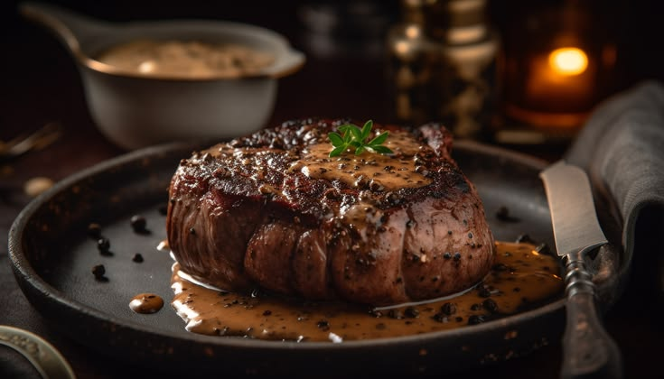

Receita de Medalhão ao Molho de Vinho

Descrição:
Esta receita de medalhão ao molho de vinho é perfeita para um jantar especial. O filé mignon é suculento e o molho de vinho tinto adiciona um sabor rico e sofisticado ao prato.
Ingredientes:
- 4 medalhões de filé mignon
- Sal e pimenta a gosto
- 2 colheres de sopa de manteiga
- 1/2 xícara de vinho tinto
- 1/4 xícara de caldo de carne
- 1 colher de chá de farinha de trigo
- 1 dente de alho picado
- 1 ramo de alecrim
Modo de Preparo:
- Tempere os medalhões com sal e pimenta.
- Aqueça a manteiga em uma frigideira grande e doure os medalhões.
- Despeje o vinho tinto e o caldo de carne na frigideira.
- Adicione a farinha de trigo e misture bem.
- Cozinhe por alguns minutos até o molho engrossar.
- Adicione o alho e o alecrim e cozinhe por mais alguns minutos.
- Sirva os medalhões com o molho de vinho.